Hình Ảnh 2
Trong chuyến viếng thăm cháu Nguyễn bá Liên (sau nầy là Chuẩn tướng Quyền Tư lệnh Thủy quân Lục chiến) đang thụ huấn tại Trường Võ Bị Quốc Gia Đà Lạt vào tháng 12 năm 1953
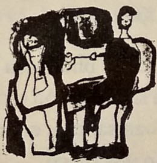
Phái đoàn quân sự Việt Nam yết kiến Thống chế Tưởng Giới Thạch trong chuyến công du Trung Hoa Dân Quốc tháng 1 năm 1960. Đúng bên phải tác giả là Trung tướng Nguyễn Khánh
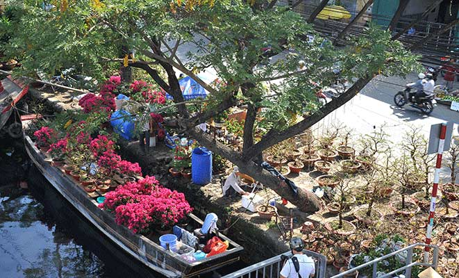
Đại sứ Henry Cabot Lodge đến hội kiến với tác giả tại Văn phòng Phó Thủ tướng Đặc trách Văn hóa Xã hội
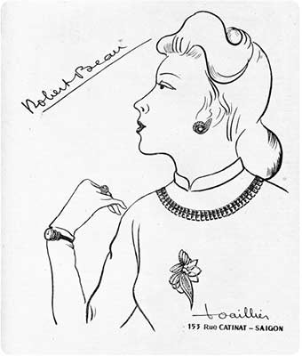
Trong một buổi tiếp tân tại Dinh Quốc trưởng năm 1964.
Từ trái qua phải: Quốc trưởng
Dương Văn Minh,
Đại sứ Cabot Lodge,
Tổng trưởng Bùi Tường Huân,
và tác giả. Người đúng sau Tướng Minh là Phó Thủ tướng Nguyễn Tôn Hoàn
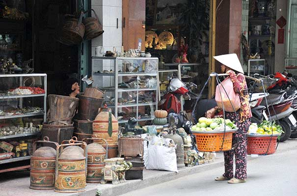
Phó Đại sứ Hoa Kỳ Alexis Johnson (với người thông ngôn) và tác giả
Đại sứ Vũ Văn Mẫu đến viếng thăm tác giả tại Văn phòng Phó Thủ tướng
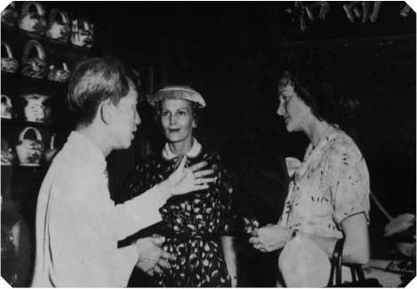
Chủ tịch Ủy hội Quốc tế Kiểm soát Đình chiến, Đại sứ Ấn Độ Ram C. Goburdhun, yết kiến tác giả tại văn phòng Phó Thủ tướng.
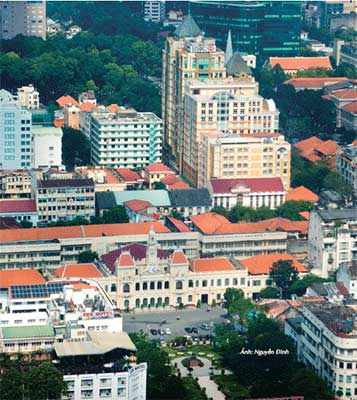
Người ngồi bên trái là Đại tá Nguyễn Văn An, Trưởng Phòng Liên lạc với Ủy hội Quốc tế
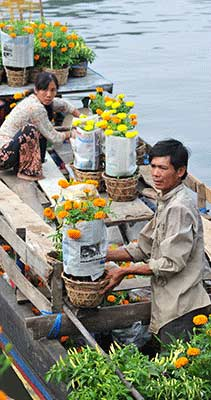
Đại tướng Mawwell Taylor, Đại sứ Hoa Kỳ tại Việt Nam, thăm xã giao tác giả tại Văn phòng Phó Thủ tướng
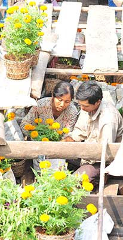
Công du Đại Hàn tháng Bảy năm 1964
Từ trái qua phải: Ông Ngô Tôn Đạt, Đại sứ Việt Nam tại Hán Thành; Bộ trưởng Quốc Phòng Đại Hàn; tác giả; Tổng thống Phác Chánh Hy; Bộ trưởng Ngoại giao Đại Hàn và Bộ trưởng Phủ Tổng thống Đại Hàn

Chụp hình lưu niệm với Bộ Chỉ huy Liên quân Mỹ-Hàn tại Bàn Môn Điếm ở vĩ tuyến thứ 38.

Người đúng cuối cùng bên trái là ông Nguyễn Thái, tác giả Is South Vietnam Viable? và người mang kiếng mát là Đại sứ Ngô Tôn Đạt
Cựu hoàng Bảo Đại trong chuyến viếng thăm Quốc hội Tiểu bang California, chụp hình kỷ niệm với hai cháu nội của tác giả, Thu Giang và Mỹ Linh
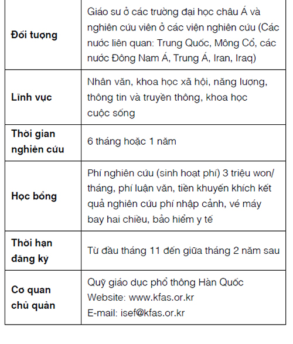
Trung tướng Nguyễn Chánh Thi đến thăm tác giả tại nhà riêng ở Fresno, tiểu bang California

Hàn huyên chuyện củ với Đại tướng Nguyễn Khánh nhân dịp ông ghé thăm tác giả tại nhà riêng ở Fresno, tiểu bang California
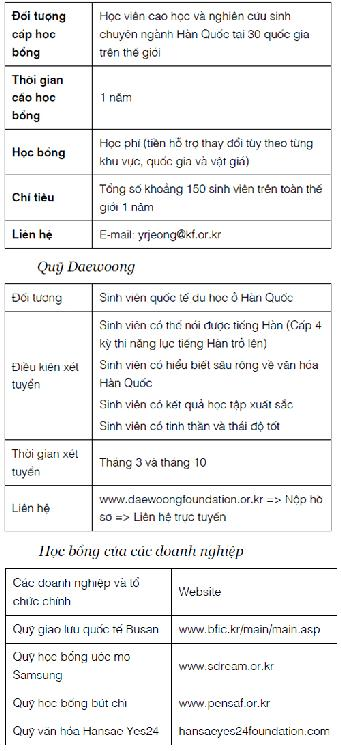
Thiếu tướng Nguyễn Cao Kỳ; Trung úy Phi công Nguyễn văn Cử (người cùng với Đại úy Phạm Phú Quốc ném bom dinh Độc Lập), thứ nam của cụ Nguyễn văn Lực; và Trung tá Phi công F5 Nguyễn Quốc Hưng ghé thăm tác giả vào đầu năm 1993

Tác giả đang phát biểu cảm tưởng trong một buổi họp mặt tại Chùa Việt Nam ở Orange County (1990).
Ngồi hàng đầu từ bên trái là Trung tướng Trần Văn Đôn, Linh mục Đỗ Thanh Hà và Thượng tọa Thích Pháp Châu
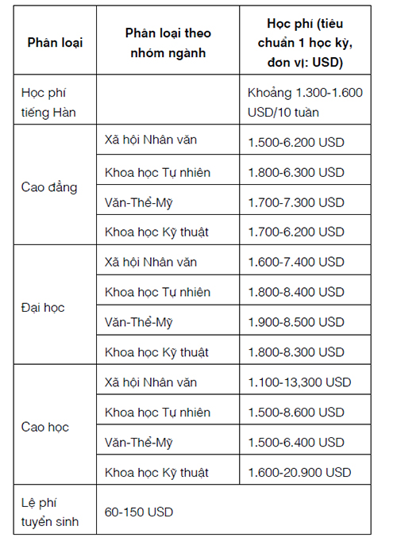
Chuyện trò với Đại tá Trần Văn Kha, tác giả Thời Đại Mới, Tranh Đấu và tác phẩm chuyên khảo Yoga

Năm 1991, tác giả làm Hội trưởng Hội Phật giáo tại Fresno, chụp hình lưu niệm với Thượng tọa Thích Đúc Niệm, Giám đốc Phật Học viện Quốc tế, lãnh đạo tinh thần của cộng đồng Phật tử tại Fresno và Đại đúc Thích Tâm Quang, Trú trì Chùa Tam Bảo. Người mặc âu phục đúng bên mặt là Cụ Nguyễn Văn Lượng, Bộ trưởng Tư Pháp của chính phủ Ngô Đình Diệm năm 1963
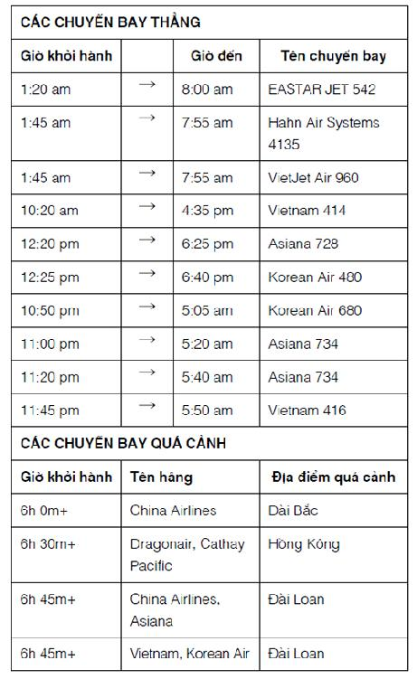